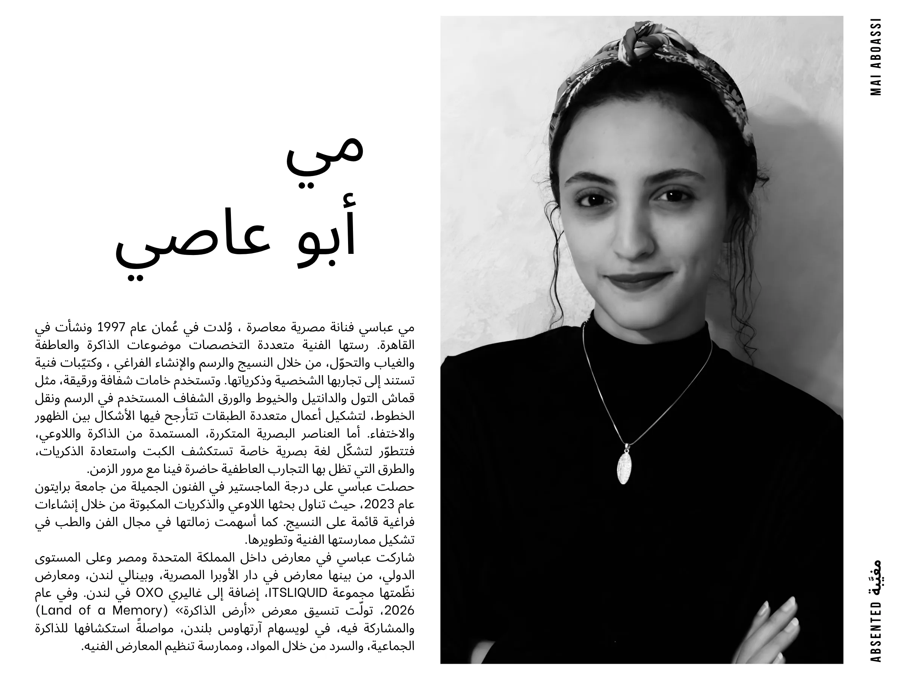

مي
أبو عاصي
مي عباسي فنانة مصرية معاصرة وُلدت في عُمان عام 1997 ونشأت في، القاهرة. رستها الفنية متعددة التخصصات موضوعات الذاكرة والعاطفة والغياب والتحوّل، من خلال النسيج والرسم والإنشاء الفراغي وكتيّبات فنية، تستند إلى تجاربها الشخصية وذكرياتها. وتستخدم خامات شفافة ورقيقة، مثل قماش التول والدانتيل والخيوط والورق الشفاف المستخدم في الرسم ونقل الخطوط، لتشكيل أعمال متعددة الطبقات تتأرجح فيها الأشكال بين الظهور والاختفاء. أما العناصر البصرية المتكررة، المستمدة من الذاكرة واللاوعي، فتتطوّر لتشكّل لغة بصرية خاصة تستكشف الكبت واستعادة الذكريات، والطرق التي تظل بها التجارب العاطفية حاضرة فينا مع مرور الزمن.
حصلت عباسي على درجة الماجستير في الفنون الجميلة من جامعة برايتون عام 2023، حيث تناول بحثها اللاوعي والذكريات المكبوتة من خلال إنشاءات فراغية قائمة على النسيج. كما أسهمت زمالتها في مجال الفن والطب في تشكيل ممارستها الفنية وتطويرها.
شاركت عباسي في معارض داخل المملكة المتحدة ومصر وعلى المستوى الدولي، من بينها معارض في دار الأوبرا المصرية، وبينالي لندن، ومعارض نظّمتها مجموعة ITSLIQUID، إضافة إلى غاليري OXO في لندن. وفي عام 2026 تولّت تنسيق معرض «أرض الذاكرة» (Land of a Memory)، والمشاركة فيه، في لويسهام آرتهاوس بلندن، مواصلةً استكشافها للذاكرة الجماعية، والسرد من خلال المواد، وممارسة تنظيم المعارض الفنيه.
